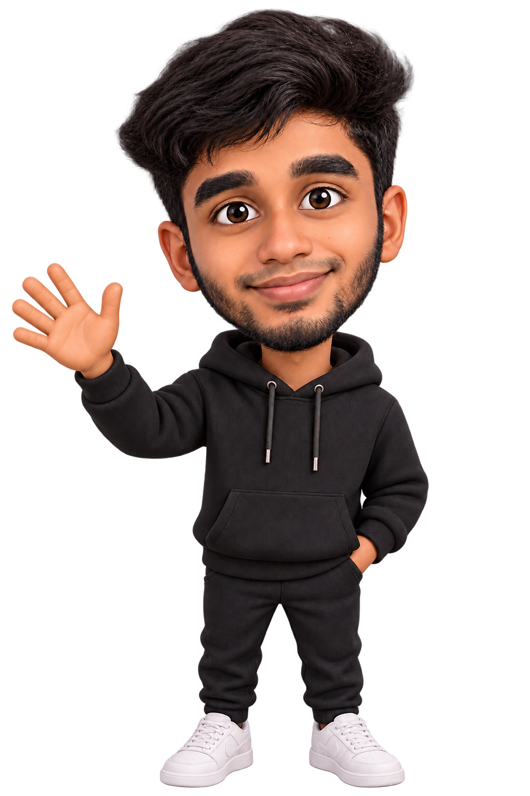
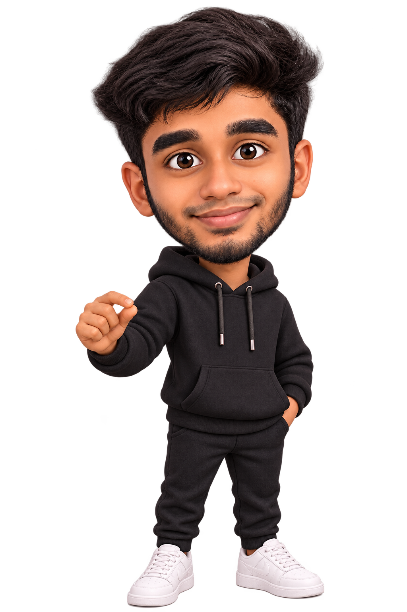

THE FOUNDATION
B.Tech · Information Technology
K.L.N. College of Engineering
Graduated with a CGPA of 8.15.
Hi, I’m Noufal ✳
Thoughtful interfaces. Smooth interactions.
Let me show you the story behind my work.


I’m Noufal Rizwan, a front-end developer based in Dubai. I turn UI designs into responsive websites and connect them to the systems that make them work.
Over the past 3+ years, I’ve worked on aquaculture brands, logistics tools, a meal delivery platform, and a badminton events app. I enjoy the small details: a layout that holds together on mobile, an interaction that feels natural, a page that loads smoothly.
Let’s talk ↗ Get to know my experience ↗Learning by building.
Growing with every project.
K.L.N. College of Engineering
Graduated with a CGPA of 8.15.
Worked on the Sunfare meal delivery UI revamp with React and Material-UI, integrated REST APIs, and improved mobile usability.
Madurai, IndiaBuilt the company website from scratch with live shipment tracking, a quote request form, and scroll-based storytelling.
Chennai, IndiaBuilt DrGrow and Fish Choice, developed the Blutik quality-check tool, and maintained Aquaconnect’s main and multilingual global websites.
Chennai, IndiaSCROLL THROUGH THE YEARS ↓
React.js · JavaScript · HTML & CSS
Tailwind CSS · Material-UI · Responsive design
GSAP · Scroll interactions
Performance optimization
REST APIs · MongoDB · MySQL
Git · Bitbucket · Postman · Agile
A selection of websites I’ve helped
bring from idea to the browser.
A new digital home for aquaculture biologicals.
Connecting seafood sourcing across borders.
A complete website, from enquiries to tracking.
A product story brought to life through motion.
Understand the people, the purpose, and what the experience needs to do.
Translate the design into responsive components and connect the data.
Check devices, polish interactions, and make the experience easier to use.
Test the full journey, launch carefully, and keep improving.
Have a role or a project in mind?
noufalrizwanuae@gmail.com